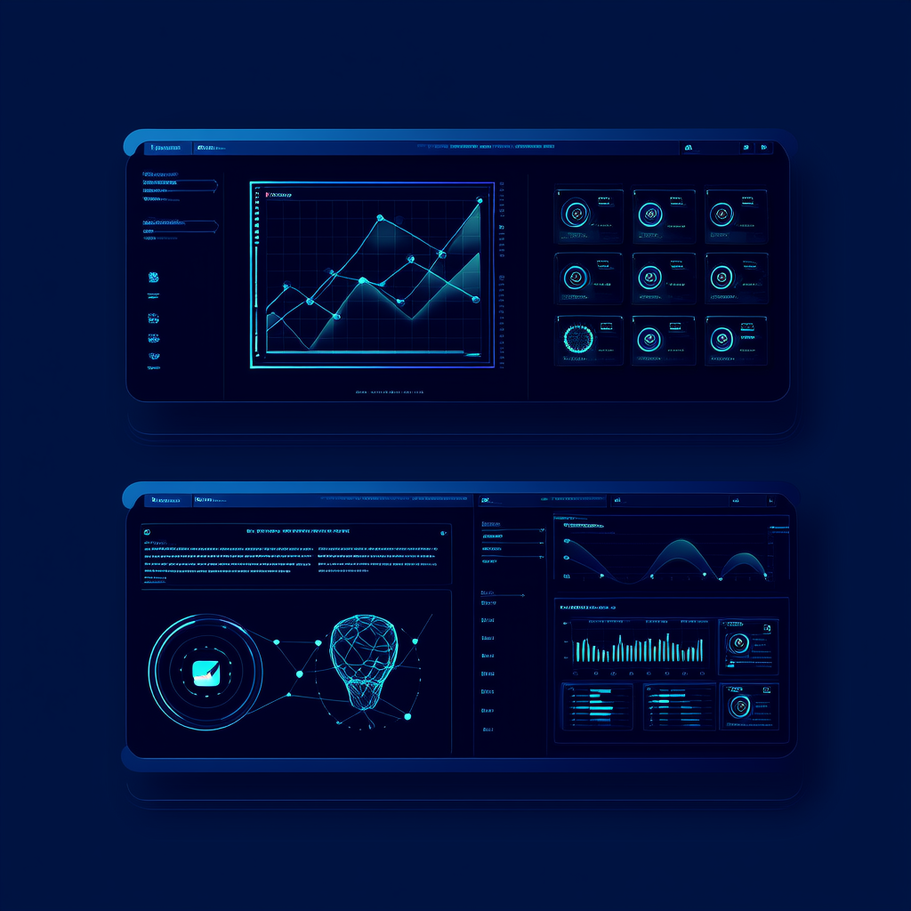

我是姚国春，武汉大学硕士。在央企做工程师时，我发现自己最享受的不是画图纸，而是理解用户需求、协调多方资源、推动方案落地——这正是产品经理的日常。负责10+电力工程项目的经历让我确信：我具备数据驱动决策、结构化思维与跨团队沟通的核心产品素养。
如今我正在系统学习AI产品方法论与机器学习基础，深度关注AI应用落地。我相信最好的AI产品不是炫技，而是解决真实世界的痛点。期待将工程思维与产品视角结合，打造真正有价值的AI产品。欢迎交流！
主导多个大型电力项目的需求梳理与方案设计。通过深入施工一线收集痛点反馈，迭代优化图纸规范，使图纸问题率降低约30%，显著减少返工。全程实践需求分析、优先级排序与迭代优化的产品方法论。
驻现场60天，协调业主、设计、施工各方利益，推动解决施工问题10余起。在多方冲突中寻找最优解，确保项目高效推进。这段经历让我深刻理解跨角色沟通的痛点和技巧。
负责工程设计文档标准化，注重信息架构与用户视角，确保文档可理解、可执行。
建立从需求文档到施工指引的完整文档体系，注重信息架构与用户视角，确保复杂信息对下游团队清晰可理解——这与PRD撰写的产品基本功直接对应。
武汉大学硕士 · 央企工程师
AI 产品经理方向转型
AI 产品经理
核电厂蒸汽发生器长期运行结垢严重，传统化学清洗成本高且效果有限。中核集团寻求创新解决方案，我们团队承担了此项合作研发项目。
从用户需求出发，设计实验方案、搭建测试平台，通过数据驱动方式迭代参数优化。独立完成建模与数据分析，发表 2 篇 SCI 论文。
工程制图 · 电力专业图纸
流体仿真 · 超声波建模分析
剪辑 · 特效 · 内容创作
SolidWorks · 3D 建模设计
数据分析 · 脚本开发
数据驱动 · 用户导向 · 持续学习

需求分析 · 用户调研 · 竞品分析 · PRD 撰写
Python · 可视化 · MATLAB
机器学习基础 · A/B 测试 · 用户增长